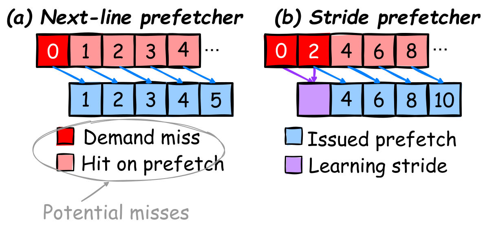
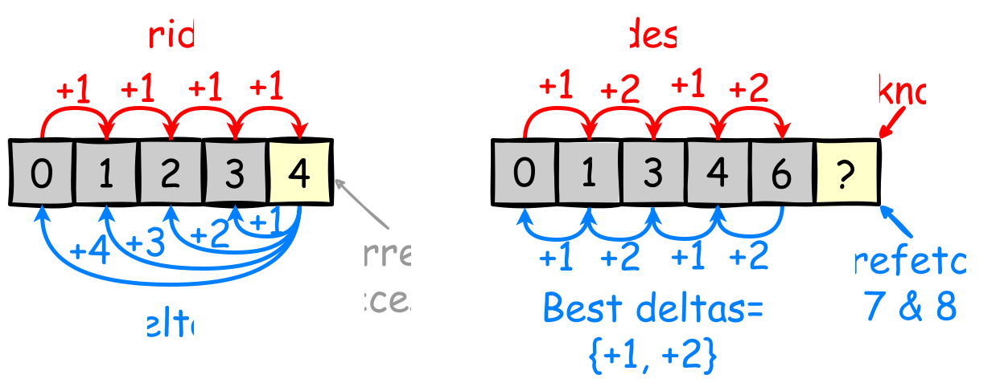
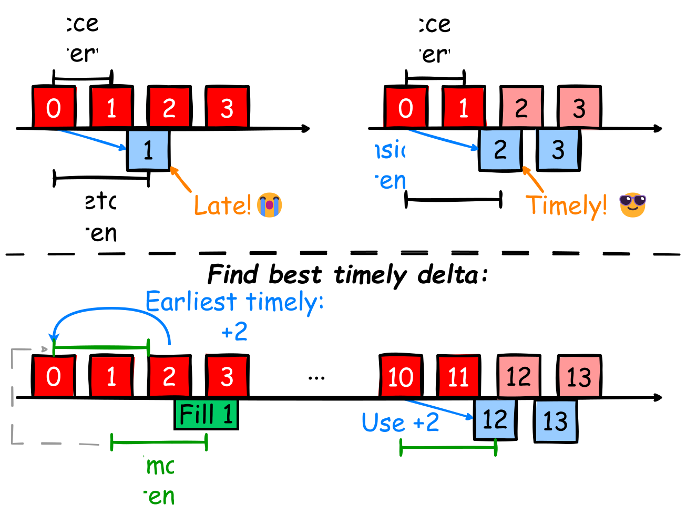

Computer Architecture 2025fall Project 3
By Prof. Jie Zhang
Due: 11:59:59 pm, December 17, 2025
In this project, we will explore the design and evaluation of hardware cache prefetchers in a modern computer system using the ChampSim simulator. First, you will learn how to configure ChampSim's cache hierarchy and integrate prefetchers into specific cache levels (e.g., L1D, L2C, or LLC). You will evaluate how cache parameters and prefetching techniques significantly impact overall system performance.
you are required to read a recent computer architecture paper introducing the Hyperion prefetcher to understand the core principles, architecture, and tradeoffs involved in prefetcher design. You will write a summary of the paper and, based on these insights, design and implement your own prefetcher in ChampSim (either a reproduction of Hyperion or a custom variant). Finally, you will evaluate your prefetcher’s performance and compare it against baseline prefetchers across the provided workload traces.
Whenever you encounter issues or have questions regarding this project, please feel free to contact the TAs via WeChat or email. All instructions and scripts have been verified on Ubuntu 20.04.1 LTS (Linux Kernel 5.15.0) and Ubuntu 22.04.2 LTS (Linux Kernel 5.19.0).
Part 1: Custom Cache Hierarchy & Cache Optimization
In this part, you will extend ChampSim with a custom cache hierarchy and explore cache allocation and associativity strategies for performance optimization.
The goal is to investigate how the same total cache capacity can be organized in different ways, and to determine how the capacity should be distributed between L1I, L1D, and L2C, as well as how the number of sets and ways affects performance.
You will run a given workload and experimentally design a cache hierarchy that achieves the highest possible performance under a fixed total cache capacity budget.
Copy the template configuration file to create your working configuration:
cp lab2_config.json lab3_config.json
ChampSim parses a JSON configuration file to set up the memory geometry and auto-generate the underlying C++ source files during the build phase.
1. Single-Core Baseline Setup
Configure lab3_config.json with the following parameters:
{
"executable_name": "champsim_proj3",
"L1I": {
"sets": 64,
"ways": 8,
"mshr_size": 16,
"prefetcher": "no",
"replacement": "lru"
},
"L1D": {
"sets": 64,
"ways": 12,
"mshr_size": 16,
"prefetcher": "no",
"replacement": "lru"
},
"L2C": {
"sets": 2048,
"ways": 16,
"mshr_size": 20,
"prefetcher": "no",
"replacement": "lru"
}
}
Calculation Check:
- L1I Size:
- L1D Size:
- L2C Size:
- Total Baseline Capacity:
Building and Running the Simulation
Generate the C++ modules using config.sh and build the binary:
./config.sh lab3_config.json
make -j $(nproc)
Run the generated executable (./bin/champsim_proj3) on cache-example.champsimtrace.xz:
./bin/champsim_proj3 --warmup_instructions 20000000 --simulation_instructions 100000000 traces/cache-example.champsimtrace.xz
Record the baseline performance, including IPC, total cycles, and cache miss statistics.
2. Cache Capacity Allocation & Organization Optimization Task
Problem Statement: Fixed Total Cache Capacity
Suppose you are given a fixed total cache capacity budget .
For this experiment, use:
The total capacity is calculated as:
where:
You will run the given workload (cache-example.champsimtrace.xz) and design different cache organizations under the same total cache capacity.
Your goal is to determine:
How should the fixed cache capacity be allocated and organized to maximize the performance of the given workload?
You may change:
- L1D capacity
- L2C capacity
- Number of sets
- Number of ways
The following parameters should remain unchanged:
- Cache block size
- MSHR size
- Hit latency
- Fill latency
- Replacement policy
- Prefetcher
2.1 L1/L2 Capacity Allocation
First, investigate how the total cache capacity should be divided between L1 and L2.
For example, compare configurations such as:
- Strategy A (Small L1, Large L2): Keep L1D relatively small and allocate most of the capacity to L2C.
- Strategy B (Balanced L1/L2): Increase L1D while reducing L2C by the same amount.
- Strategy C (Large L1, Small L2): Allocate substantially more capacity to L1D and reduce L2C accordingly.
The total capacity must always satisfy:
Analyze whether giving more capacity to the faster L1 caches or to the larger L2 cache provides better performance.
2.2 Cache Sets and Associativity Optimization
Cache capacity alone does not determine cache performance.
For the same cache capacity, compare different combinations of sets and ways.
For example, a cache with a fixed capacity can be organized using:
- More sets + fewer ways
- Fewer sets + more ways
- Balanced sets and ways
The cache capacity must remain unchanged:
For example, for a 256 KB cache:
| Sets | Ways | Capacity |
|---|---|---|
| 1024 | 4 | 256 KB |
| 512 | 8 | 256 KB |
| 256 | 16 | 256 KB |
| 128 | 32 | 256 KB |
Compare these organizations and analyze how associativity affects:
- Cache hit rate
- Cache miss rate
- Conflict misses
- L1/L2 MPKI
- IPC
- Total execution cycles
Determine whether the workload benefits more from higher associativity or from a larger number of sets.
Students should use experimental results to iteratively refine their cache design rather than simply trying random configurations.
Optimization Questions to Answer:
- How should the fixed capacity budget be split between L1D, and L2C to maximize IPC?
- For a fixed cache capacity, how does associativity affect performance?
- Is increasing the number of ways always beneficial?
- When is it better to increase the number of sets instead of increasing associativity?
- What cache hierarchy achieves the highest IPC for the given workload?
- Why does your final configuration outperform the baseline and other tested configurations?
Please run the memory-sensitive workload (gemm.champsimtrace.xz) and include the following in your report:
-
Build Verification: A screenshot of your single-core
lab3_config.jsonfile and the terminal output confirming a successful compilation. -
Single-Core IPC Comparison: A figure or table comparing
CPU 0 cumulative IPConcache-exampleacross the baseline and modified cache configurations. -
Cache Capacity Allocation Analysis:
- Show at least 3 different L1/L2 capacity allocation schemes using the same total cache capacity.
- Present a comparative table/chart of IPC, total cycles, and cache miss rates.
- Explain why different L1/L2 capacity distributions result in different performance.
- Associativity Analysis:
- Compare at least 3 different sets/ways organizations while keeping cache capacity unchanged.
- Report the corresponding cache miss rates and IPC.
- Explain the impact of associativity and conflict misses on performance.
Part 2: Run Simulation with Prefetchers
ChampSim provides multiple classic cache prefetchers out of the box (located in the prefetcher/ directory). In ChampSim, prefetchers are assigned to a specific cache level (such as L1D, L2C, or LLC) directly in the JSON configuration file via the "prefetcher" key.
For example, to attach the ip_stride prefetcher to the CPU's L1 Data Cache (L1D), update your lab3_config.json:
"L1D": {
"sets": 64,
"ways": 12,
"mshr_size": 16,
"hit_latency": 3,
"fill_latency": 1,
"prefetcher": "ip_stride",
"replacement": "lru"
}
Note: Unlike simulators with dynamic Python scripting, changing the prefetcher module in ChampSim requires re-running
./config.shand re-compiling the executable:./config.sh lab3_config.json make -j $(nproc)Tip: You can set different
"executable_name"values in your JSON file (e.g.,"champsim_no_pf","champsim_next_line","champsim_ip_stride") to build distinct binary executables for different configurations without overwriting them.
In this part, we will explore three L1D prefetcher configurations:
"no": Disables prefetching for baseline comparison."next_line": A simple prefetcher that fetches the contiguous next cache block on access."ip_stride": An Instruction Pointer (IP) based stride prefetcher that tracks strided memory access patterns per instruction.
Running the Simulations
Let's evaluate how these prefetchers impact system performance on two prefetch-sensitive workloads: shell_sort and gemm.
To run a simulation for a specific prefetcher binary, execute:
# Example: Running ip_stride prefetcher on shell_sort and gemm
./bin/champsim --warmup_instructions 20000000 --simulation_instructions 100000000 traces/shell_sort.champsimtrace.xz > results/ip_stride_sort.txt
./bin/champsim --warmup_instructions 20000000 --simulation_instructions 100000000 traces/gemm.champsimtrace.xz > results/ip_stride_gemm.txt
Repeat this process for the binaries compiled with "no" and "next_line".
Hardware prefetchers rely on observing memory access patterns over time to train internal state tables. Setting the simulation or warmup instructions too low will result in inaccurate prefetcher accuracy and coverage statistics.
For this evaluation, the recommended parameters are --warmup_instructions 20000000 (20M) and --simulation_instructions 100000000 (100M). You may use smaller instruction counts (e.g., 10M) for rapid debugging, but ensure your final report uses the recommended values.
Analyzing Statistics
After the simulation completes, ChampSim outputs detailed cache and prefetcher performance statistics to stdout (or your redirected output text file).
Look for the === Simulation === section and the corresponding L1D PREFETCHER statistics:
=== Simulation ===
CPU 0 cumulative IPC: 1.652 Instructions per cycle: 1.652
...
L1D PREFETCHER REQUESTED: 450210 ISSUED: 410200 USEFUL: 328160 USELESS: 82040
L1D AVERAGE MISS LATENCY: 24.5 cycles
In this project, you will evaluate four critical performance metrics:
cpu.ipc: The overall instructions per cycle (CPU 0 cumulative IPC).prefetcher.accuracy: The fraction of useful prefetches out of total issued prefetches:
prefetcher.coverage: The fraction of potential misses eliminated by useful prefetches:
prefetcher.pfLate: The number of prefetches issued too late (i.e., demand requests hit an in-flight MSHR allocated by a prefetch before it completed).
Please run two prefetch-sensitive workloads (shell_sort.champsimtrace.xz and gemm.champsimtrace.xz) across the three prefetcher configurations. The remaining workloads (spfa and binary_search) are prefetch-insensitive and optional.
Include figures or tables in your report presenting the four critical metrics (IPC, Accuracy, Coverage, and Late Prefetch Count) across all six test cases:
- Prefetchers:
no(No prefetcher),next_line,ip_stride. - Workloads:
shell_sort.champsimtrace.xz,gemm.champsimtrace.xz. - Cache Hierarchy: Use the 2-level cache hierarchy configured in Part 1, attaching prefetchers to
L1D.
In total, you will run 6 simulation runs (3 prefetcher configurations 2 workloads).
Part 3: Paper Reading, Prefetcher Design, Implementation, and Evaluation
In this part, you will first read a state-of-the-art research paper on hardware prefetching and analyze its design principles. Based on the paper and your understanding of memory access prediction, you will then design and implement your own hardware prefetcher in ChampSim. Finally, you will evaluate your prefetcher performance and participate in a competitive benchmark ranking.
Task 1: Paper Reading and Summary
Cui, Y., Chen, W., Cheng, X., & Yi, J. (2024). Hyperion: A Highly Effective Page and PC Based Delta Prefetcher. ACM Transactions on Architecture and Code Optimization (TACO).
You are required to read the paper above and write a concise summary. The goal of this task is to understand the design principles of modern hardware prefetchers and use them as inspiration for your own prefetcher design.
Your summary should cover:
-
Background: What challenges do modern processors face when predicting future memory accesses? What limitations exist in traditional spatial, stride, or delta-based prefetchers?
-
Core Design & Mechanisms: How does Hyperion leverage Page information and Instruction Pointer (PC) information to track memory access patterns? Explain its key tables, metadata structures, delta tracking mechanisms, and prefetch generation strategy.
-
Design Insights: Identify the key ideas from Hyperion that can be applied to designing a new prefetcher. Discuss possible improvements, extensions, or alternative designs.
(Note: You are not required to reproduce Hyperion exactly. The purpose of this task is to understand the paper and derive your own prefetcher design.)
Task 2: Designing and Implementing Your Own Prefetcher in ChampSim
ChampSim provides a clean, function-based C++ interface for implementing hardware prefetchers.
In this task, you will design and implement your own prefetcher based on the ideas learned from the reference paper. Your design should include a prediction mechanism, metadata tracking structures, and a prefetch generation strategy.
Your prefetcher may be inspired by Hyperion or other existing prefetching techniques, such as:
- PC-based stride prefetching
- Delta correlation prefetching
- Page-based spatial prefetching
- Region-based prefetching
- Hybrid prefetching combining multiple predictors
- Any novel prefetching strategy designed by yourself
A standard ChampSim prefetcher resides in the prefetcher/ directory (or a custom subfolder under prefetcher/) and implements the following core callback functions:
#include "cache.h"
// 1. Initialization: Called once when the simulation starts
void l1d_prefetcher_initialize() {
// Initialize your internal tables, tracking structures, and counters here
}
// 2. Operate: Called on every L1D cache access (hits and misses)
void l1d_prefetcher_operate(uint64_t addr, uint64_t ip, uint8_t cache_hit, uint8_t type) {
// Extract block address and page offset
uint64_t block_addr = addr >> LOG2_BLOCK_SIZE; // LOG2_BLOCK_SIZE is typically 6
uint64_t page_addr = addr >> LOG2_PAGE_SIZE; // LOG2_PAGE_SIZE is typically 12
uint64_t page_offset = (addr >> LOG2_BLOCK_SIZE) & 0x3F; // 64 blocks per 4KiB page
// Implement your prediction algorithm here:
// 1. Update access history
// 2. Predict future memory addresses
// 3. Generate prefetch requests
uint64_t pf_block_addr = block_addr + 1;
uint64_t pf_addr = pf_block_addr << LOG2_BLOCK_SIZE;
// Example prefetch request
prefetch_line(pf_addr, true, 0);
}
// 3. Cache Fill: Called when a line is filled into L1D
void l1d_prefetcher_cache_fill(uint64_t addr, uint32_t set, uint32_t way,
uint8_t prefetch, uint64_t evicted_addr,
uint8_t metadata_in) {
// Update tracking structures upon cache line fill
}
// 4. Final Stats: Called at the end of simulation
void l1d_prefetcher_final_stats() {
// Print custom statistics if needed
}
Key ChampSim Prefetcher Interfaces & Concepts
-
l1d_prefetcher_operate(): Triggered on every L1D load/store access. -
addr: The byte memory address being accessed. -
ip: The Instruction Pointer (PC) of the instruction initiating the access. -
cache_hit:1if the access hit in L1D,0if it missed. -
type: Access type (e.g.,LOAD,RFO,PREFETCH). -
l1d_prefetcher_cache_fill(): Triggered when a line is filled from lower memory (L2C/RAM). -
prefetch:1if this fill was triggered by a prior hardware prefetch request;0if it was a demand miss fill. -
prefetch_line(pf_addr, fill_level, metadata): The primary API to request a prefetch. -
pf_addr: Target byte address to prefetch. -
fill_level: Set totrueto fill into L1D (orfalseto target lower levels). -
Address Manipulations:
-
Block Address: $\text{block_addr} = \text{addr} \gg \text{LOG2_BLOCK_SIZE}$
-
Page Address: $\text{page_addr} = \text{addr} \gg \text{LOG2_PAGE_SIZE}$
-
Page Offset: $\text{page_offset} = (\text{addr} \gg \text{LOG2_BLOCK_SIZE}) \ & \ 0\text{x}3\text{F}$
In ChampSim, you can track logical time or access age using a simple global counter incremented inside l1d_prefetcher_operate() (e.g., uint64_t current_cycle = 0; current_cycle++;), or use standard C++ STL containers (std::vector, std::unordered_map, fixed-size arrays) as global/static variables within your prefetcher file.
Your implementation should carefully design metadata structures to record memory access history, prediction information, confidence values, or other information required by your prefetching algorithm.
Adding Your Prefetcher to ChampSim
- Create a new prefetcher file:
prefetcher/my_prefetcher.cc(orprefetcher/my_prefetcher/my_prefetcher.cc). - Implement your own prefetcher logic based on the reference paper and your design ideas.
- Update
lab3_config.jsonto assign your prefetcher name to theL1Dcache module. - Generate C++ files and compile:
./config.sh lab3_config.json
make -j $(nproc)
Evaluation and Grading Criteria
Your prefetcher implementation will be evaluated using a suite of ChampSim trace workloads (including both prefetch-sensitive and undisclosed hidden benchmarks).
Grading Structure
-
Paper Summary (20%): Clear and accurate summary of the Hyperion paper, including its background, architecture, prediction mechanisms, and key design insights.
-
Prefetcher Design & Implementation Report (40%): Students should provide:
- Description of their prefetcher design.
- Motivation behind the design choices.
- Explanation of prediction mechanisms and metadata structures.
- Correct implementation in ChampSim.
- Analysis of IPC, accuracy, coverage, and late prefetches.
-
Performance Evaluation (40%):
-
Absolute Performance (25%): Your prefetcher must outperform the baseline
next_lineprefetcher and achieve a minimum required IPC speedup threshold on the provided workloads. -
Relative Ranking (15%): Students will be ranked based on the geometric mean IPC speedup across all evaluation traces. Top-performing implementations will receive full ranking points, with a gradual curve applied down the leaderboard.
Please run your implemented prefetcher on the test workloads (shell_sort.champsimtrace.xz and gemm.champsimtrace.xz). Submit the following deliverables:
-
Source Code: Submit your C++ prefetcher implementation file (
my_prefetcher.cc) and any associated header files. -
Paper Summary: A 1–2 page PDF document summarizing the Hyperion paper:
- Background
- Core Design/Mechanisms
- Key insights for prefetcher design
-
Prefetcher Design Report: Include:
- Overview of your prefetcher architecture.
- Explanation of prediction algorithms and metadata structures.
- Comparison with existing approaches.
-
Lab Report: Include tables or figures comparing:
- IPC
- Prefetch Accuracy
- Prefetch Coverage
- Late Prefetches
Compare your implementation with:
noprefetchernext_lineip_stride- Your proposed prefetcher
Provide a discussion explaining:
- Why your prefetcher improves performance on certain workloads.
- Which access patterns are difficult to predict.
- Potential limitations and future improvements.
Submission
- Please submit the deliverables for each part in order, formatted clearly in a single lab report (PDF format preferred). Provide brief but insightful discussions for all experimental results.
- You MUST submit your source code files, paper summary, and custom trace file along with your report.
- Pack all required files into a single zip/tar archive and submit it via course.pku.edu.cn. The title of the archive and the report must follow the format:
Student-ID_Name_Proj3(e.g.,123456789_WangXiaoming_Proj3). - You can also email your submission to
2501112042@stu.pku.edu.cn. The email subject and attachment filename MUST both beStudent-ID_Name_Proj3. - ACADEMIC INTEGRITY: Do not plagiarize code or report contents. We will randomly select students for an oral defense/Q&A session regarding their code implementation and trace design.
- You are allocated 3 slip days in total for the entire semester (shared across all projects) to extend project deadlines.
- Projects are due strictly at 23:59:59 on the deadline date. Late submissions without slip days will incur a 20% penalty per day (1 second late = 1 day late).
Please ensure your submitted archive contains the following four components:
- Lab Report (
Report.pdf):- Part 1: Screenshot of
lab3_config.json, build terminal output, and IPC comparison table/figure across cache configurations. - Part 2: Evaluation table/figures showing IPC, Accuracy, Coverage, and Late Prefetches for baseline prefetchers (
no,next_line,ip_stride) onshell_sortandgemm. - Part 3: Evaluation metrics for your
Hyperionprefetcher, along with performance comparison and discussion. - Part 4: Detailed explanation of your custom trace design strategy, hostility analysis, and performance table against baselines.
- Part 1: Screenshot of
- Paper Summary (
Paper_Summary.pdfor section in report):- A concise summary (1–2 pages) covering the Background and Core Architecture/Mechanisms of the Hyperion paper.
- Source Code & Configurations:
lab3_config.json: Your ChampSim cache hierarchy configuration.hyperion.cc: Your C++ implementation of the Hyperion prefetcher.stress_test.c(ortrace_generator.py): Source code used to construct your hostile memory trace.
- Custom Trace File:
<student_id>_stress.champsimtrace.xz: Your valid, compressed ChampSim stress trace.
Your grade for Project 3 will be evaluated out of 20 points as follows:
-
Part 1: Cache Hierarchy Setup (3 pts)
- Screenshot of valid
lab3_config.jsonand successful build output: 1.5 pts - Correct execution and reasonable IPC comparison analysis: 1.5 pts
- Screenshot of valid
-
Part 2: Baseline Prefetcher Evaluation (3 pts)
- Complete and accurate collection of all 4 metrics (IPC, Accuracy, Coverage, Late count) across
no,next_line, andip_strideon all required workloads: 3 pts
- Complete and accurate collection of all 4 metrics (IPC, Accuracy, Coverage, Late count) across
-
Part 3: Paper Summary & Hyperion Implementation (9 pts)
- Paper Summary: Comprehensive summary of background and design mechanisms: 3 pts (Missing major sections: -1 pt each)
- Code Correctness: Compilable and functional Hyperion C++ implementation: 2 pts
- Absolute Performance: Outperforming
next_lineand meeting the baseline IPC speedup threshold: 2 pts - Relative Leaderboard Ranking: Based on geometric mean IPC speedup across all test traces: 2 pts (Top 20%: 2 pts; Top 50%: 1.5 pts; Others: 1 pt)
-
Part 4: Custom Hostile Trace Design (5 pts)
- Trace Validity & Source Code: Source code provided and trace passes all instruction count, memory density, and address footprint checks: 1 pt
- Absolute Difficulty Threshold: Successfully achieves L2C miss rate or significantly degrades baseline IPC: 2 pts
- Trace Difficulty Leaderboard Ranking: Ranked by Difficulty Score (): 2 pts (Top 20% hardest traces: 2 pts; Top 50%: 1.5 pts; Others: 1 pt)
Appendix A: Introduction to Cache Prefetchers
In modern memory hierarchy, the penalty of cache misses can be extremely large. This motivates designers to reduce the cache miss rate. Typically, some workloads show predictable memory access patterns, like sequentially accessing an array (address sequence as A, A+1, ...). In such cases, a previous access can inform the CPU about the potential following accesses (e.g., A can lead to A+1). The cache prefetchers are designed for these scenarios, which extract the workloads' access patterns, and load the following data before the CPU explicitly accesses them, eliminating cache misses.
The simplest implementation of prefetcher is the "next-line prefetcher", as shown in Fig (a) below. When the CPU access a block (cacheline) A, the next-line prefetcher will load the next block A+1 to the cache. Note that in cache hierarchy, the access granualrity will always be block (typically 64B), so there is no concept like "next-byte prefetcher".

However, next-line prefetcher cannot perform well on some workloads. As a simple example, some workloads access the memory in a strided pattern, such as A, A+2, A+4,... (here we have stride = 2). In such scenarios, next-line prefetcher will never prefetch the being-used data. To serve these workloads, "stride prefetcher", as shown in Fig (b), is proposed, which can learn the actual stride from the memory access history, and perform useful prefetches.
The "degree" denotes the depth of prefetching. For example, the next-line prefetcher has degree = 1, for it prefetches one line per issue. If it has larger degree, it can be named as "next-N-line prefetcher".
Metrics to evaluate prefetchers
In the text above, we claim that stride prefetcher can perform better than next-line prefetcher. As a question, how can we determine the "performance" of a prefetcher? Basically, we have several values or metrics to evaluate prefetchers. Here we list them with their name in stats.txt of gem5 output:
pfIssued: The number of prefetches issued by prefetcher.pfUseful: The number of prefetches that are useful (i.e., the prefetched data are accessed in the cache before being evicted).pfUnused: The number of prefetches that actually fill data into cache, but the data are not accessed before being evicted.pfLate: The number of prefetches that are issued lately (the prefetched data are in cache, MSHRs or write buffer).demandMshrMisses: The number of cache misses, no prefetch were issued to cover them.accuracy: The accuracy of the prefetcher, equivalent topfUseful / pfIssued.coverage: The coverage of the prefetcher, equivalent topfUseful / potentialMisses, wherepotentialMisses = pfUseful + demandMshrMisses. Here, "potential misses" refers to the accesses that would miss if there were no prefetcher. Therefore, the number of potential misses is the number of useful prefetches plus actual misses.
The most important metrics are accuracy and coverage. There is a trade-off between them. More aggressive prefetching will fetch more addresses, whether useful of not. Many of the actual accesses can be covered by prefetches, but many useless data are also prefetched, thus, increasing the coverage but decreasing accuracy. More conservative prefetching may increase accuracy but decrease coverage.
With these metrics, we can compare between next-line prefetcher and stride prefetcher: stride prefetcher can have higher accuracy and coverage than next-line prefetcher under strided accesses, since next-line prefetcher cannot prefetch any useful data.
Appendix B: Hyperion Prefetcher Brief Description
In this appendix, we will briefly describe the concepts of delta prefetching and timely prefetch. Based on these information, we describe the Hyperion prefetcher. Finally, we list the features that are proposed in the paper but you don't need to implement in your codes.
Delta prefetching and local-delta prefetching
To introduce delta prefetching, let's first consider a workload that performs an "irregular" memory access pattern: A, A+1, A+3, A+4, A+6, .... The stride sequence of this stream is +1, +2, +1, +2, .... Patterns that vary their strides like this are called irregular patterns. A normal stride prefetcher (check Appendix A for details) cannot provide any coverage for irregular patterns, since it cannot learn enough confidence for any individual stride value.

Delta prefetching is proposed to handle these irregular patterns. Conceptually, a "delta" is the address difference of current demand access with any previous accesses, as shown in the left figure above. The principle of delta prefetching is to learn among all existing deltas and issue prefetch based on deltas with the highest confidence. As shown in the right figure, with +1, +2, +1, +2, ... pattern, a delta prefetcher can learn that +1 and +2 has same confidence. It can then prefetch both +1 and +2, increasing the coverage (though may decrease accuracy).
Similar to branch predictors, prefetchers can also learn deltas based on local contexts, such as access history of individual PCs, or history inside individual pages.
Timely prefetch
In Appendix A, we introduced the concept of late prefetches. An example is illustrated in figure below. Late prefetch happens because fetching data from lower levels of memory hierarchy requires time. For example, under the simplest pattern +1, +1, +1, ..., if the access interval is less than the fetch latency, next-line prefetcher can only provide zero coverage because all prefetches will be late. The principle of timely prefetch is to take prefetch latency into consideration. As shown in the right figure, timely prefetches can provide enough coverage.

To find the best timely delta for prefetch, prefetchers can estimate the fetch latency from accesses and data fills. When a delta prefetcher records previous accesses, it will also record a timestamp of the access's arrival. When the data is filled into the cache (green part in the figure), the fetch latency can be estimated with current timestamp - arrival timestamp. Based on these information, when an access B arrives, the best delta d should meet the following constraints:
- In histories, the access interval between
AandA+dis larger than the fetch latency (+2and+3in the figure). - The
dis the minimal delta that meet the above constraint (+2 < +3).
Once the best delta is learned, the prefetcher can issue timely prefetches.
Hyperion
Hyperion is a local-delta-based L1D prefetcher that generates timely prefetches to enhance both the accuracy and coverage. The figure below shows the overview of Hyperion's structure and methods.

Hyperion contains two kind of tables: history tables and delta tables. Each individual PC and page has its own history table and delta table. The history tables record the recent potential misses (demand miss and hit on prefetch) with its address and access timestamp. The delta tables record the recent occurred timely deltas. Each table has a total counter, and each delta has its local counter. These counters are used to calculate the confidence of deltas.
Three types of cache events can trigger Hyperion:
- When there is a demand miss, Hyperion first updates the history tables (both PC and Page) with the address and timestamp. If a table is full, it will evict the earliest history (i.e., FIFO eviction). Then, Hyperion find both the PC delta table and Page delta table for the delta with highest confidence, and prefetch with this delta. This find-prefetch cycle will perform 12 times.
- When there is a demand fill (i.e., filling the data required by demand miss to cache), Hyperion will find the demand miss on this filled address in the history tables. The latency can be estimated by
lat = current - timestamp. Then, it will scan the history tables and learn the best delta. Then, it will update the delta tables with this learnt delta. If the delta is already recorded in the table, the total counter and its local counter are plused by 1. If the delta is not recorded, the old delta with lowest confidence will be evicted, and the counters are updated (new local counter is 1). - When there is a hit on prefetched data, which indicates a potential miss, Hyperion will also estimate the latency (the timestamp of fetch-beginning can be found in the prefetch queue), learn best delta and update delta tables, like in scenario 2. It will also update history tables and issue prefetches, like in secnario 1.
- Use block base address: In cache context, all operations are in block granularity. The most important issue is that
notifyFill()will pass block base address to the arguments. If you forget to use block base address, you may miss information innotifyFill(). So it's better to transform any address to block base address firstly (you can useblockAddress()orblockIndex()). - Record more information: The Hyperion is a hardware prefetcher. To mitigate its usage of hardware resources, it records only neccessary information. However, in your simulator, you can use much more memory. Feel free to record useful information to improve your prefetcher. The approaches Hyperion uses to mitigate hardware overheads are not neccessary in your implementation. We've listed them in next section.
- Use larger degree: Hyperion is a degree-1 prefetcher, that is, for each selected delta, it prefetches only one block. However, increasing the degree may improve the performance under our specific test executables. You can use larger degree as long as it doesn't severely pollute the cache (leading to low accuracy and high cache miss rate). For example,
gem5's default stride perfetcher usesdegree = 4. - Use lower threshold: Hyperion uses 0.8 as the L1D prefetch confidence threshold to avoid L1D cache pollution. However, such high confidence may lead to low coverage. You can use lower confidence during testing.
Features that are not required to implement
As a hardware design, Hyperion takes multiple approaches to reduce the hardware overheads. However, in gem5 simulator, hardware overhead is not a critical concern if we primarily focus on the logical performance of a design. Moreover, some designs modify basic cache implementation, which can be challenging in gem5. For your convenience, you don't need to implement the following features:
- Unified tables: As described, Hyperion records histories and deltas for both individual PCs and individual pages. However, this can lead to redundant records. To reduce the used hardware, Hyperion merges the actual entries of PC and page tables into unified history/delta tables, and only uses separate indexing tables. In your implementation, you can just use two separate tables.
- Prefetch buffer: Hyperion issues multiple prefetches each round. However, hardware prefetch queue can be full and some prefetches may not have the chance to be issued. Hyperion introduces a prefetch buffer to temporarily records these prefetches. Our software impelementation can ignore this constraint.
- Timestamp and latency recording: Hyperion add some bits to cache blocks and MSHR entries to record the timestamps and latencies. This is more hardware-efficient than use new tables. However, it will be difficult to modify the cache and MSHR implementation in
gem5. You can just use tables in your prefetcher to record timestamps and latencies. - Dynamic cache-level selection: Hyperion will select the level of prefetches according to the delta confidence. Delta with low confidence may be filled into L2 cache. However, implementing this feature may be difficult in
gem5, since the framework doesn't provide to prefetchers for a global access of all caches. You are not required to implement this feature. - Event on fill of prefetched data: Hyperion will trigger additional events when a prefetched block is filled, due to limited PQ size. In your implementation, you don't need to implement this feature. In
notifyFill(), you can use the interfaceacc.pkt->cmd.isHWPrefetch()to identify if the fill is from prefetching.